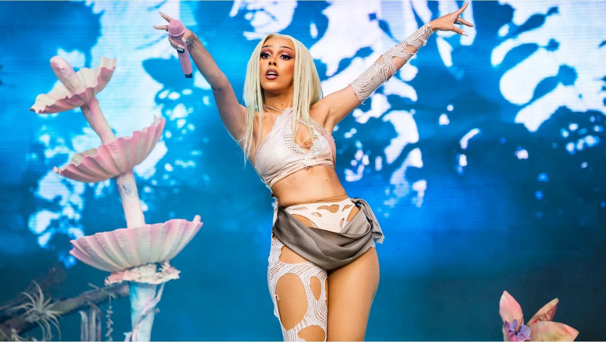

Biography
Early Life
Doja Cat, born Amala Ratna Zandile Dlamini on October 21, 1995, in Los Angeles, California, grew up in a creative family. Her mother is a painter, and her father, Dumisani Dlamini, is a South African actor. She was exposed to a variety of musical styles from a young age, which influenced her diverse musical taste and creativity.
Rise to Fame
At the age of 16, Doja Cat began uploading music to SoundCloud. Her song "So High" gained attention and landed her a record deal with RCA Records. She released her debut EP Purr! in 2014. However, her major breakthrough came in 2018 with the viral success of her novelty song "Mooo!" which catapulted her into internet fame.
Breakthrough and Success
Following the success of "Mooo!," Doja Cat released her second album Hot Pink in 2019, which featured the hit single "Say So." The song went viral on TikTok and earned her mainstream recognition, eventually reaching number one on the Billboard Hot 100. She has continued to top charts with hits like "Kiss Me More" and "Streets."
Personal Life
Doja Cat is known for her humor, bold fashion choices, and internet-savvy personality. She frequently engages with her fans on social media, often using platforms like Instagram and TikTok to promote her music and entertain her audience with funny and quirky content.
Discography
- Amala (2018): Doja Cat's debut studio album with a mix of R&B and rap. This album set the foundation for her musical career.
- Hot Pink (2019): Featuring viral hits like "Say So" and "Juicy," this album earned her widespread recognition.
- Planet Her (2021): Her most successful album to date, featuring collaborations with SZA, Ariana Grande, and The Weeknd.
Awards and Achievements
- Grammy Awards: Won Best Pop Duo/Group Performance in 2022 for "Kiss Me More" featuring SZA.
- MTV Video Music Awards: Best New Artist in 2020 and Best Collaboration in 2021 for "Kiss Me More."
- American Music Awards: Favorite Female R&B Artist and Favorite Collaboration at the 2021 AMAs.